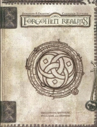

“Forgotten Realms Campaign Setting” on the
Shelf of Many Books

Forgotten Realms Campaign Setting
D&D 3.0
(3e)
Year
: 2001 (June)
Forgotten Realms Campaign Setting
on Amazon
Known monsters from the book:
Death Tyrant
Deep Rothe
Ghost Rothe
Kir-Lanan
Pack Lizard
Riding Lizard
Shade
Spitting Crawler Lizard
Surface Rothe
Tressym
Two-headed Adder Snake
Winged Viper Snake